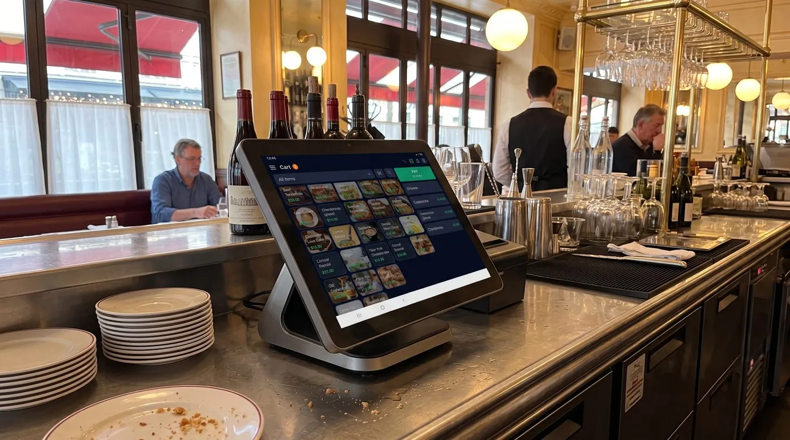

TPV para vinoteca: cómo elegir el software de punto de venta para tu tienda de vinos y licores
Vender vino y licores no se parece a vender casi nada. Un mismo tinto puede tener tres añadas en la estantería, dos formatos y un precio distinto por unidad o por caja. Por eso un TPV para vinoteca, o un buen TPV para licorería, no es un capricho: es lo que separa una tienda que sabe exactamente qué tiene y a cuánto, de otra que descubre las roturas de stock cuando ya es tarde. En esta guía verás qué debe hacer de verdad un punto de venta para tiendas de vinos y licores, y cómo elegir uno sin pagar de más.

Por qué una vinoteca necesita un TPV específico
Imagina una tienda de barrio con 60 productos casi idénticos. Ahora multiplícalo: una vinoteca bien surtida maneja con facilidad varios cientos o miles de referencias, muchas de ellas variaciones del mismo vino. El Rioja crianza de 2019 no es el de 2020, la botella de 75 cl no es el magnum, y la denominación de origen cambia por completo el cliente al que va dirigido. Un punto de venta genérico trata todo eso como "productos" sueltos y, en cuanto el catálogo crece, el control se desmorona.
En España la intención de búsqueda más habitual de los comerciantes del sector es precisamente "TPV para vinoteca" o "TPV para licorería". En México y Latinoamérica el mismo problema se busca como "sistema de punto de venta para licorería" o "software para tienda de vinos y licores". El nombre cambia; la necesidad es idéntica: una herramienta que entienda la naturaleza de un catálogo de bebidas y te dé control real sobre cada botella.
Un buen TPV para este sector resuelve cuatro dolores de cabeza concretos: distinguir referencias muy parecidas sin equivocarse, saber al instante cuánto stock real hay de cada una, vender con la misma soltura una botella suelta o una caja de doce, y acompañar la venta con la información que el cliente espera (la añada, la D.O., una recomendación de maridaje). Lo demás, cobrar rápido, sacar el ticket, lo hace cualquiera.
Gestión fina de referencias: añadas, denominaciones y formatos
Este es el corazón de todo. Si tu software no domina la gestión fina de referencias, ninguna otra función te salvará. Esto es lo que deberías poder hacer sin malabarismos:
Añadas y variantes del mismo vino
Cada añada es, en la práctica, un producto distinto: tiene su precio, su stock y su rotación. Tu TPV debe permitirte crear variantes de una misma referencia (por año de cosecha) sin tener que duplicar fichas a mano ni mezclar el inventario de la 2019 con la 2020. Cuando llega una añada nueva, la antigua no debería desaparecer del sistema mientras te quede stock.
Denominaciones de origen, tipo y bodega
Categorizar por denominación de origen (Rioja, Ribera del Duero, Rías Baixas…), por tipo (tinto, blanco, espumoso, generoso), por bodega o por región te permite filtrar el catálogo en segundos, montar promociones por D.O. y entender qué se vende. Las familias y subfamilias bien estructuradas son la base de unos informes que de verdad sirvan.
Formatos: 75 cl, magnum, medias botellas
El mismo vino en distintos formatos es otra fuente clásica de errores de stock. Media botella, botella estándar, magnum o estuche de regalo deben convivir como variantes claras, cada una con su código de barras y su precio. Un buen TPV te deja escanear y cobrar sin pararte a pensar cuál es cuál.
Venta por unidad y por caja
Vendes una botella al cliente que entra a por su cena, y una caja de seis al restaurante de la esquina. Tu TPV debería gestionar ambas operaciones sobre el mismo producto: al vender una caja, descuenta automáticamente las botellas correspondientes del stock. Así el inventario refleja la realidad vendas como vendas, y puedes aplicar precios diferentes (o un descuento por volumen) a cada unidad de venta.
Funciones imprescindibles de un TPV para vinos y licores
Más allá del catálogo, un buen punto de venta para el sector en 2026 debería ofrecerte:
- Stock preciso y en tiempo real, con alertas de stock mínimo para no quedarte sin tus referencias estrella ni acumular las que no rotan.
- Fichas de producto ricas: añada, D.O., grado, notas de cata y recomendaciones de maridaje que tu equipo pueda consultar al vender.
- E-commerce y click & collect: vender online y que el cliente recoja en tienda, con el mismo stock sincronizado para no vender lo que ya no tienes.
- Gestión de catas y eventos: reservas, aforo y cobro anticipado para las actividades que fidelizan a tus mejores clientes.
- Fidelización: identificar a tus clientes recurrentes, su histórico de compras y sus preferencias para recomendarles mejor.
- Crédito a clientes (fiado): dejar a cuenta a un cliente habitual o a un restaurante y pasar el cobro después.
- Modo sin conexión: que la caja siga vendiendo aunque se caiga internet y sincronice sola al volver.
- IVA y desglose correctos para el alcohol, con la factura lista cuando el cliente la pida.
- Coste transparente, sin comisiones obligatorias sobre cada cobro.
Nuestra recomendación
Comparamos las opciones por su relación coste-beneficio real para una vinoteca o licorería: qué incluye el plan base, lo bien que gestiona referencias complejas, si funciona sin internet y cuánto pagas de verdad al cabo del año. Esta es nuestra selección.
digabloPos
digabloPos es un punto de venta en la nube moderno que cubre lo que otros cobran aparte. Su plan base es gratis para siempre (sin límite de tiempo y sin tarjeta de crédito) y destaca justo en lo que una vinoteca necesita: una gestión fina de stock y referencias con la que distinguir añadas, formatos y denominaciones sin pelearte con el sistema. Funciona en modo sin conexión con sincronización automática, permite el crédito a clientes (fiado) para tus cuentas de confianza y crece con módulos opcionales que activas solo cuando los necesitas.
Sobre la facturación: está preparado para la facturación electrónica, así que estás listo cuando un cliente te pida factura. Antes de contratar, te recomendamos confirmar con el proveedor el detalle según tu país y tu operativa.
👍 Fortalezas
- Plan base gratis para siempre, sin compromiso
- Gestión fina de stock y referencias (añadas, formatos, D.O.)
- Funciona sin internet, con sincronización automática
- Crédito a clientes / fiado
- Preparado para la facturación electrónica
- Módulos que crecen contigo
- Sin comisión obligatoria sobre los cobros
👎 A tener en cuenta
- Marca más nueva que los gigantes del sector
- Conviene confirmar el detalle de facturación según tu país
- Algunos módulos avanzados son de pago
Stockagile
Una opción sólida y muy orientada al control de inventario de tiendas de vinos y licores, con punto de venta, analítica y facturación. Sus planes arrancan en torno a los 39 € al mes por TPV (verifica el precio vigente), así que es interesante si buscas una herramienta de gestión completa, aunque no ofrece un plan base gratuito permanente.
Hiboutik
Software TPV para vinotecas y tiendas gourmet con un plan de entrada generoso y conexión con plataformas e-commerce como WooCommerce, PrestaShop o Shopify. Buena puerta de entrada si tu prioridad es vender también online, aunque algunas funciones avanzadas suben de plan.
Square para vinos y licores
Muy cómodo para cobrar con tarjeta y empezar rápido, con hardware propio y app sencilla. Su modelo gira en torno a la comisión por transacción, así que conviene calcular el coste a largo plazo. La gestión fina de referencias por añada y formato es más limitada que en herramientas especializadas.
¿Quieres probar sin gastar nada?
El plan base de nuestra opción #1 es gratis para siempre, se configura en minutos y no pide tarjeta de crédito.
Crear mi TPV gratisTabla comparativa
| Criterio | digabloPos | Stockagile | Hiboutik | Square |
|---|---|---|---|---|
| Plan base gratis | Sí | No (desde ~39 €/mes) | Plan de entrada | App sí |
| Gestión fina de referencias (añadas, formatos) | Sí | Sí | Sí | Limitada |
| Venta por unidad y por caja | Sí | Sí | Parcial | Limitada |
| Modo sin conexión | Sí | Parcial | Parcial | Limitado |
| Crédito a clientes / fiado | Sí | Parcial | No | No |
| Comisión obligatoria por cobro | Ninguna | Ninguna | Ninguna | Sí (por transacción) |
| E-commerce / click & collect | Vía módulo | Sí | Sí | Sí |
Datos verificados en junio de 2026 a partir de páginas oficiales y sitios comparativos especializados. Los precios, comisiones y funciones cambian con frecuencia: confirma siempre en los sitios oficiales antes de decidir. El detalle de facturación electrónica de cada solución debe validarse directamente con el proveedor.
IVA del alcohol y facturación
El vino y los licores tienen su propia letra pequeña fiscal. En la mayoría de países el alcohol tributa al tipo general de IVA, pero existen matices según el producto y, en algunos casos, impuestos especiales sobre las bebidas alcohólicas que conviene tener bien parametrizados. Lo importante, desde el punto de vista del TPV, es que puedas asignar el tipo de IVA correcto a cada referencia y que ese desglose aparezca claro en el ticket y en la factura.
A esto se suma que cada vez más clientes, y casi todos los profesionales, como restaurantes o eventos, te pedirán factura. Por eso es clave que tu sistema esté preparado para la facturación electrónica y que la emisión sea ágil, sin obligarte a salir del flujo de venta. La normativa avanza rápido en España, México y otros mercados, así que elige una herramienta que ya contemple este escenario en lugar de tener que cambiar de sistema dentro de un año.
El consejo práctico: parametriza bien el IVA de cada familia de productos desde el primer día y confirma los tipos vigentes con tu asesor fiscal. Un error de tipo impositivo repetido en cientos de ventas es caro de corregir.
Cómo elegir, paso a paso
- Prueba la gestión de referencias con tu propio catálogo. Carga tres añadas del mismo vino y dos formatos: si el sistema lo gestiona con soltura, vas por buen camino.
- Comprueba la venta por unidad y por caja. Que al vender una caja descuente las botellas del stock automáticamente.
- Verifica el stock en tiempo real y las alertas de mínimos. Es tu seguro contra roturas de tus referencias estrella.
- Mira más allá de la caja. E-commerce, click & collect, catas y fidelización marcan la diferencia a medio plazo.
- Suma el coste real a 12 meses. Mensualidad + módulos + comisiones de cobro, no solo el precio de la etiqueta.
- Confirma la facturación y el IVA. Que esté preparado para la facturación electrónica y permita el IVA correcto del alcohol.
- Empieza gratis si puedes. Un plan base sin coste te dice más con tu catálogo real que cualquier demostración comercial.
¿Listo para ordenar tu vinoteca?
Configura tu TPV gratis, sin compromiso y sin tarjeta de crédito, y prueba la gestión de referencias con tus propias añadas y formatos.
Empezar gratisPreguntas frecuentes
¿Qué diferencia a un TPV para vinoteca de un TPV genérico?
Una vinoteca o licorería maneja cientos de referencias muy parecidas: el mismo vino en distintas añadas, formatos (75 cl, magnum, medias botellas) y denominaciones de origen. Un TPV pensado para el sector distingue cada referencia con su ficha, controla el stock al detalle por variante y permite vender por unidad o por caja. Un TPV genérico suele quedarse corto en esa gestión fina.
¿Puedo vender por botella y por caja con el mismo producto?
Sí, si tu software lo soporta. Lo ideal es definir la unidad de venta (botella) y la agrupación (caja de 6 o 12) de modo que al vender una caja el sistema descuente las botellas del stock. Así el inventario siempre cuadra, vendas como vendas.
¿Necesito que el TPV gestione el IVA del alcohol y los impuestos especiales?
El vino y los licores suelen tributar al tipo general de IVA, pero hay matices según el producto y el país, y a veces intervienen impuestos especiales sobre el alcohol. Tu TPV debe permitir asignar el tipo de IVA correcto a cada referencia y desglosarlo en el ticket y la factura. Confirma siempre los tipos vigentes con tu asesor fiscal.
¿Puede un TPV gratuito servir para una vinoteca?
Sí, siempre que cubra lo esencial: gestión fina de referencias, stock preciso, ventas rápidas y la posibilidad de crecer con módulos. Un plan base gratuito te permite empezar sin inversión y validar el sistema con tu propio catálogo antes de pagar por funciones avanzadas.
¿Sirve igual para una licorería que para una vinoteca?
Sí. Tanto si vendes vino como destilados, cervezas o licores, las necesidades son las mismas: distinguir referencias, controlar stock al detalle, vender por unidad o caja y emitir factura cuando te la pidan. En México y Latinoamérica se busca como "sistema de punto de venta para licorería"; en España, como "TPV para vinoteca" o "TPV para licorería". La herramienta adecuada cubre los dos casos.
Fuentes oficiales
Los precios y las funciones cambian a menudo. Aquí tiene la documentación de los proveedores citados, para comprobarlo usted mismo.
- Centro de ayuda de Square : lo que el proveedor documenta sobre sus funciones y precios.